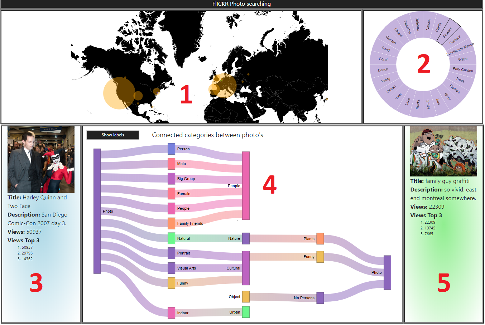

- World map displaying flickr photos and their geographic locations. Locations with a dense grid of photos are aggregated and on hover or click show the photo with the most views.
- Sunburst visualization to filter the world map photos. The first layer is the categories and the second layer the tags for the chosen category.
- Photo 1, shown as an green dot on the map, which is the exact location taken from the aggregated photos. Furthermore are the descriptions shown underneath the photos
- Photo 2, shown as an blue dot on the map, which is the exact location taken from the aggregated photos. Furthermore are the descriptions shown underneath the photos
- Sankey diagram showing the relationship between the two clicked photos. The first layer from left or right are the categories of the photos. The second layer is tags of both photos, the common tags have a connection comming from left and right.
